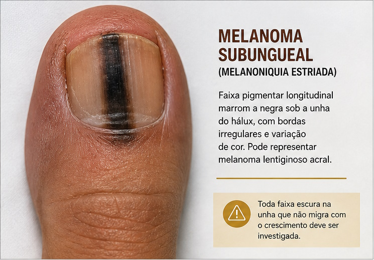
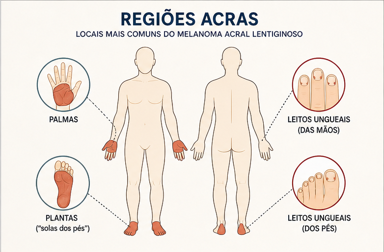
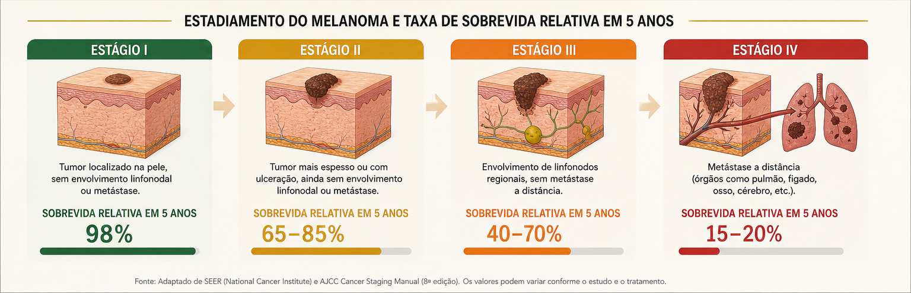

Uma mancha preta embaixo da unha — e anos de engano
Robert Nesta Marley, nascido em 6 de fevereiro de 1945, na Jamaica, era o maior nome do reggae no mundo quando uma pequena mancha escura sob a unha do dedão do pé direito começou a chamar atenção. Fotos de turnês europeias dos anos 1970 já o mostram com curativo na região — sinal de que o problema existia muito antes de qualquer consulta médica formal.78
Bob Marley adorava futebol. Jogava com a mesma intensidade com que criava música. E foi para o futebol que ele — e as pessoas ao redor — atribuíram a lesão: um trauma banal, uma "unhada", um hematoma subungueal típico de atleta. O erro parecia razoável. O resultado foi fatal.
"Uma ferida que não cicatriza não é apenas uma ferida. É um sinal que o organismo não consegue resolver sozinho — e que merece investigação, não espera."
Em 1977, quando a dor persistiu e a unha caiu, Marley finalmente buscou atendimento médico com o Dr. William Baker, ortopedista. Após insistência, uma biópsia foi realizada. O resultado foi chocante: melanoma invasivo — já infiltrando estruturas profundas do dedo. Não era trauma. Nunca foi.79

Da lesão ignorada à metástase cerebral — quatro anos de diagnóstico perdido
–1976
Registros fotográficos de turnês mostram Bob Marley com curativo no dedão do pé direito anos antes do diagnóstico. Relatos de conhecidos indicam que ele descrevia o local como "ferida" há tempos. A lesão era atribuída ao futebol — sua grande paixão. Ninguém considerou melanoma.
–1977
Durante turnê pela Europa, Marley buscou atendimento em Paris. A lesão foi tratada como trauma ortopédico. A mancha escura sob a unha — sinal clássico de melanoniquia, que pode indicar melanoma subungueal — não foi reconhecida como suspeita. O termo "melanoma acral lentiginoso" havia sido cunhado apenas em 1976 e era pouco conhecido pela medicina geral.
Julho
Após a queda da unha e persistência da dor, Marley procurou o Dr. William Baker, ortopedista. Com insistência de amigos, foi realizada biópsia incisional. O anatomopatológico revelou melanoma acral lentiginoso com invasão profunda. Avaliação subsequente no Royal College of Surgeons em Londres confirmou o diagnóstico. Em ambas as instituições, a recomendação foi amputação do hálux direito.78
Ago–Set
Bob Marley recusou a amputação por dois motivos: convicções rastafáris (o corpo é templo de Jah e não deve ser mutilado) e preocupação com sua carreira de performer.711 Após pressão, aceitou apenas exérese ampla local com enxerto de pele retirada da coxa — procedimento insuficiente para controlar a doença que já progredia microscopicamente. O melanoma continuou avançando em silêncio.
–1980
Marley continuou realizando shows ao redor do mundo — incluindo o histórico concerto pela independência do Zimbabwe (1980). Durante esse período, o melanoma metastatizou para linfonodos, fígado, pulmões e cérebro. A doença avançou sem sintomas dramáticos até atingir estágio IV. Crises convulsivas foram o sinal de alerta, conforme descrito em artigo clínico publicado na Revista Brasileira de Neurologia (2017).1
Set
Em setembro de 1980, Marley desmaiou enquanto corria no Central Park, Nova York. Levado ao hospital, a equipe médica descobriu metástases múltiplas: cérebro, pulmões e estômago. O diagnóstico agora era melanoma estágio IV. Mesmo assim, dois dias depois realizou seu último show, em Pittsburgh, Pennsylvania, em 23 de setembro de 1980.89
Nov
Sem opções convencionais eficazes, Marley foi encaminhado à Ringberg-Klinik, na Baviera, onde o médico Josef Issels aplicava terapias não convencionais — dieta, imunoestimulação e métodos sem validação científica adequada. Por oito meses tentou tratar um melanoma metastático com medicina não comprovada. As terapias não surtiram efeito e possivelmente atrasaram cuidados paliativos adequados.711
11 Mai
Tentando voltar à Jamaica para morrer em sua terra, Marley precisou ser internado de emergência em Miami durante o voo. Faleceu no dia 11 de maio de 1981, na companhia de sua mãe. A causa da morte foi melanoma acral lentiginoso metastático — com metástases em cérebro, pulmões e fígado. Seu funeral na Jamaica teve honras de chefe de Estado.17
O câncer que não precisa de sol — e afeta sobretudo pele negra
O melanoma acral lentiginoso (MAL) é radicalmente diferente dos outros melanomas. Ele não é causado por exposição solar. Surge em áreas sem pelos — solas dos pés, palmas das mãos, debaixo das unhas — por mecanismos ainda não completamente esclarecidos, mas possivelmente ligados a trauma mecânico repetitivo e fatores genéticos.32
Em países como Japão, China e entre populações afrodescendentes, o MAL representa o tipo mais comum de melanoma. No entanto, é frequentemente subdiagnosticado justamente porque o mito de que "pele negra não tem câncer de pele" ainda persiste — com consequências mortais.310
⚠️ O melanoma subungueal — especificamente sob as unhas — metastatiza mais rapidamente do que o melanoma acral das plantas/palmas. Pesquisas recentes mostram diferenças moleculares significativas entre os dois, com ausência de mutação BRAF no subungueal, o que torna o tratamento ainda mais desafiador.65
Por que é confundido com ferida crônica?
O MAL cresce lentamente em fase inicial, simulando diversas condições benignas. O resultado: diagnóstico tardio na esmagadora maioria dos casos. Quando finalmente identificado, o tumor geralmente já é espesso (alto índice de Breslow) e com maior risco de metástase linfonodal.23
A mancha escura sob a unha parece hematoma por "unhada". A dor e o não-cicatrizamento são atribuídos a lesão esportiva — exatamente como aconteceu com Marley.4
Na planta do pé ou entre os dedos, a lesão pigmentada pode ser tratada como onicomicose ou tinea pedis por meses — perdendo janela terapêutica preciosa.4
Feridas que não cicatrizam em regiões acras podem representar melanoma ulcerado. A ausência de cicatrização é um sinal de alarme que exige biópsia — não apenas curativo.412
Lesões elevadas e pigmentadas na sola do pé podem ser tratadas como verruga plantar por dermatologistas com menos experiência nesse subtipo raro.4

Como reconhecer — a Regra ABCDE e a Regra CUBED
Dois instrumentos clínicos são fundamentais para suspeitar de melanoma em regiões acras. O ABCDE é clássico; o CUBED foi desenvolvido especificamente para lesões nos pés e unhas — o exato cenário de Bob Marley.
Regra ABCDE — para qualquer lesão pigmentada
Uma metade diferente da outra — não-espelhada
Irregulares, mal-definidas, recortadas ou esfumaçadas
Múltiplas tonalidades: preto, marrom, cinza, vermelho, branco
Maior que 6 mm — mas melanomas menores existem
Qualquer mudança em lesão pré-existente exige avaliação
Regra CUBED — específica para pés e unhas
Desenvolvida para o contexto acral, avalia características que tornam uma lesão suspeita nessas regiões frequentemente negligenciadas:
Presença de qualquer pigmentação — marrom, preta, cinza
Diagnóstico incerto — dúvida clínica já é indicação de biópsia
Sangramento espontâneo ou ao toque mínimo
Crescimento progressivo da lesão ao longo do tempo
Cicatrização retardada — ferida que não fecha em tempo esperado
O "D" de Delay — cicatrização retardada — era exatamente o que Bob Marley apresentava. Uma ferida que não cicatrizava, meses depois do suposto trauma. Esse sinal, em qualquer lesão acral, exige biópsia. Não observação. Biópsia.
Por que isso importa para quem cuida de feridas crônicas
O telemonitoramento de feridas crônicas é uma prática que salva vidas — e o caso Bob Marley mostra que essa vigilância precisa ir além da úlcera clássica. Lesões em solas de pé diabético, regiões periungueais e plantas dos pés podem abrigar melanoma disfarçado de ferida crônica.
A mensagem clínica é direta: toda ferida que não cicatriza segundo o ritmo esperado é suspeita. O protocolo de telemonitoramento deve incluir critérios de alerta para encaminhamento dermatológico urgente quando determinados sinais surgem.
🚨 Sinais de alarme que exigem encaminhamento dermatológico urgente
- Ferida na sola do pé, planta ou região periungueal que não cicatriza em 4–6 semanas com tratamento adequado
- Lesão pigmentada (marrom, preta, cinza) em região acral, com ou sem ulceração
- Faixa de pigmentação escura longitudinal sob a lâmina ungueal (melanoniquia estriada)
- Lesão que sangra espontaneamente ou ao curativo, sem trauma óbvio
- Crescimento progressivo de lesão já monitorada, mesmo que lentamente
- Bordas irregulares ou coloração heterogênea em qualquer lesão acral
- Paciente afrodescendente com qualquer lesão pigmentada acral suspeita
Em pessoas negras, a percepção de risco é historicamente mais baixa — tanto na população quanto entre profissionais de saúde. Esse viés mata. A taxa de mortalidade por melanoma em afrodescendentes é desproporcionalmente maior, não porque o câncer seja biologicamente mais agressivo nesse grupo, mas porque o diagnóstico chega tarde demais.
Doutora em Enfermagem pela UFRGS (2016), Adrize é a coordenadora do projeto de extensão Amor-à-Pele e lidera o Núcleo de Estudos em Práticas de Saúde e Enfermagem (NEPEn) da UFPel, com foco em lesões cutâneas crônicas, práticas integrativas e populações vulneráveis. No PET-Saúde Digital, coordena o telemonitoramento para pessoas com feridas crônicas — iniciativa que torna a história de Bob Marley diretamente relevante: reconhecer quando uma ferida que não cicatriza transcende o diagnóstico habitual é a essência do cuidado qualificado. Editora da Journal of Nursing and Health (JONAH) e colaboradora do grupo Sankofa de pesquisa em saúde das mulheres negras.
Lattes: lattes.cnpq.br/9425000336640831 · ORCID: 0000-0002-5616-1626
Médica graduada pela UCPel (2016), com especialização em Dermatologia Clínica pela FAPSS/Instituto BWS (Porto Alegre) e especialização em Atenção Básica pela UFSC. Atua na UBS Sansca e também como apoio no matriciamento de dermatologia da Prefeitura de Pelotas (projeto Telessaúde). Participou do PET-Saúde (2022–2023) na UFPel e possui dupla formação — Medicina e Farmácia e Bioquímica — pela UCPel. A presença de dermatologista com experiência em lesões pigmentadas e acesso via atenção básica é recurso estratégico para o G10: lesões com qualquer sinal CUBED positivo devem ser encaminhadas para avaliação dermatológica — de preferência com dermatoscopia — antes de prosseguir com protocolo exclusivo de ferida crônica.
Lattes: lattes.cnpq.br/4834300972797265
O que a medicina poderia ter feito diferente
O caso Bob Marley é estudado em dermatologia precisamente porque concentra múltiplos fatores de falha diagnóstica e terapêutica. Não foi apenas uma confusão clínica — foi um sistema de crenças, lacunas do conhecimento da época e decisões individuais que se sobrepuseram tragicamente.
Qualquer ferida que não cicatriza em região acral deveria ter sido biopsiada na primeira consulta — não meses depois. A biópsia incisional precoce teria dado o diagnóstico em estágio I, curável com cirurgia.
O primeiro contato foi com um ortopedista. Um dermatologista treinado para lesões pigmentadas teria reconhecido a melanoniquia estriada como sinal de alarme muito antes.
Com diagnóstico em estágio I–II, a amputação do hálux teria tido alta probabilidade de cura. Pesquisas recentes indicam que mesmo a amputação pode não evitar metástases no subungueal — mas em 1977, era a melhor opção disponível.
O MAL foi descrito apenas em 1976. A medicina geral da época não reconhecia o padrão clínico. Isso não justifica, mas contextualiza: a educação médica continuada é obrigação permanente.

O que fica — a lição de Bob Marley para a prática do cuidado de feridas
Bob Marley não morreu por falta de recursos médicos. Morreu por um diagnóstico tardio — alimentado por uma combinação de desconhecimento clínico, preconceito velado (a ideia de que pessoas negras não desenvolvem câncer de pele), crenças religiosas e a ilusão coletiva de que uma "ferida não cicatrizante" era menos grave do que era.
Para profissionais que monitoram feridas crônicas, o legado clínico de Marley é direto: toda ferida que não fecha é uma hipótese aberta. O diagnóstico de úlcera crônica não exclui neoplasia. O telemonitoramento eficaz precisa de olhos treinados para reconhecer quando uma ferida transcende sua aparência.
"Não ignore uma mancha escura, uma ferida que não cicatriza ou uma 'unha encravada diferente'. A diferença entre estágio I e estágio IV é, muitas vezes, apenas o tempo que levamos para olhar com atenção." — Dr. Timótio Dorn, dermatologista
O reggae de Bob Marley continua vivo — e com ele, a lição de que o corpo fala, mas cabe ao cuidador saber ouvir. Uma ferida que não cicatriza é um pedido de socorro. Que a próxima consulta seja o momento em que esse pedido seja finalmente atendido.
Referências
Artigos científicos
- ANJOS, R. A. et al. Bob Marley's disease: cerebral metastasis of acral melanoma. Revista Brasileira de Neurologia, Rio de Janeiro, v. 53, n. 1, p. 42–44, abr. 2017.
- FONSECA, E. S. et al. Melanoma lentiginoso acral. Caminhos – Revista UNIFOA, Barbacena, v. 9, n. 1, p. 1–12, 2023. Disponível em: https://revistas.unifoa.edu.br/caminhos/article/download/5116/3633.
- BRADFORD, P. T. et al. Acral lentiginous melanoma: incidence and survival patterns in the United States. Archives of Dermatology (now JAMA Dermatology), Chicago, v. 145, n. 4, p. 427–434, 2009. DOI: 10.1001/archderm.145.4.427.
- ALBRESKI, D.; SLOAN, S. B. Melanoma of the feet: misdiagnosed and misunderstood. Clinics in Dermatology, Oxford, v. 27, n. 6, p. 556–563, 2009. DOI: 10.1016/j.clindermatol.2009.03.011.
Artigos-revisão e monografias
- Acral lentiginous melanoma and Bob Marley. Indian Journal of Dermatology, Venereology and Leprology, Mumbai, v. 91, n. 1, p. 2–3, 2025. Disponível em: ijdvl.com/acral-lentiginous-melanoma-and-bob-marley-mavericks-in-their-own-right/.
- [Autor(a) não explicitado(a)]. Melanoma lentiginoso acral em análise molecular e terapêutica. Linus Pauling – Revista de Educação e Valores, v. 12, n. 1, p. 1–10, 2026. Disponível em: periodicos.newsciencepubl.com/LEV/article/view/12166.
Sites institucionais e blogs
- SKIN CANCER FOUNDATION. Bob Marley should not have died from melanoma. SkinCancer.org, 2024. Disponível em: skincancer.org/blog/bob-marley-should-not-have-died-from-melanoma/.
- AIM AT MELANOMA FOUNDATION. Five things you may not know about Bob Marley and acral lentiginous melanoma. AIMatMelanoma.org, 2024. Disponível em: aimatmelanoma.org/five-things-you-may-not-know-about-bob-marley-and-acral-lentiginous-melanoma/.
- UNIVERSITY OF COLORADO CANCER CENTER. What is the rare melanoma that killed Bob Marley? News.cuanschutz.edu, 2024. Disponível em: news.cuanschutz.edu/2024/02/what-is-the-rare-melanoma-that-killed-bob-marley/.
- INSTITUTO MELANOMA BRASIL. Melanoma lentiginoso acral: mais comum entre afrodescendentes. MelanomaBrasil.org, 2020. Disponível em: melanomabrasil.org (buscar por título).
- DORN, T. A história completa do melanoma acral mais famoso do mundo: o caso Bob Marley. Drtimotiodorn.com.br, 2025. Disponível em: drtimotiodorn.com.br (buscar por "melanoma acral" ou "Bob Marley").
- Resumo de melanoma lentiginoso acral: riscos, tratamento e mais! Med Estratégia, 2025. Disponível em: med.estrategia.com/portal/conteudos-gratis/doencas/resumo-de-melanoma-diagnostico-tratamento-e-mais/.